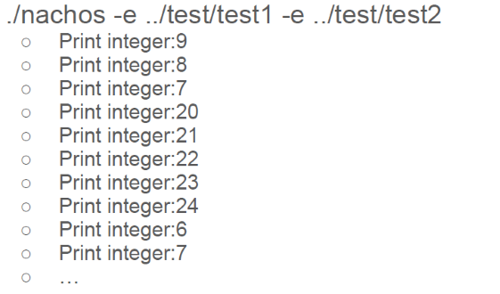

當分開執行test1及test2程式，產生如Fig. 1的結果。
 Fig. 1. 分開執行test1及test2的結果
Fig. 1. 分開執行test1及test2的結果
但在同時執行test1及test2程式時，產生如Fig. 2的結果，存在錯誤的輸出。
 Fig. 2. 同時執行test1及test2的結果Why the result is not congruent with expected?
因為在NachOS的原始架構中沒有為多個程式做記憶空間的管理，原始架構雖然有另建虛擬的記憶空間，但是當使多份程式同時執行時，就如project1所示，一次執行test1和test2時，他們會重疊使用同樣的記憶空間，使得多個程式發生錯亂。從程式碼來看在addrspace.cc這個檔案中的AddrSpace()，它預設設定會將所有的實體記憶空間分頁分配出去，如Fig. 3中for迴圈所示，預設使其跑到NumPhysPages，為所有實體記憶空間分頁。接著以下會討論如何修改以及修改後結果。
 Fig. 3. 原始NachOS中AddrSpace()的程式碼
Fig. 3. 原始NachOS中AddrSpace()的程式碼
How to solve the issue?
(1) 首先，需要先在addrspace.h檔中增加兩個static變數，這個static變數是AddrSpace這個class擁有的，如Fig. 4中紅框所示。
Fig. 4. addrspace.h中AddrSpace的程式碼其中usedPhysPage[NumPhysPages]是用來記錄所有Page的使用狀況，NumPhysPages是指實體記憶空間最大的Page數；而usedPhysPageNum是用來記錄總共用的Page有多少，以確保加上額外的threads時不會超過NumPhysPages。
(2) 在addrspace.cc檔中，include下面增加兩行程式碼做初始化，如Fig. 5所示。並且把原始AddrSpace::AddrSpace()都註解掉，因為原始設定會將所有的實體記憶空間分頁分配出去，並不是我們要的。
Fig. 5. 在addrspace.cc中初始化程式碼(3) 接著在解構子AddrSpace::~AddrSpace()中將沒有用到的usedPhysPage[]設回FALSE，並把usedPhysPageNum減掉numPages，以便之後的程式使用，如Fig. 6所示。
Fig. 6. 解構子AddrSpace::~AddrSpace()程式碼(4) 到AddrSpace::Load中修改，將原本的ASSERT(numPages <= NumPhysPages); 改為ASSERT(usedPhysPageNum+numPages <= NumPhysPages); 用來檢查是否有足夠的未使用Pages，且多加上usedPhysPageNum+=numPages;。接著將原始AddrSpace::AddrSpace()中的程式碼複製做些修改，首先加上while(usedPhysPage[j++]){}以及usedPhysPage[j-1]=TRUE;，這兩行的功能就是當usedPhysPage[]中的Page被使用時，也就是顯示為TRUE時，就往下一個Page尋找，當找到為FALSE的usedPhysPage[]時，就把它的值設成TRUE，並把資料存在該Page。其餘就是些許的修改，如pageTable = new TranslationEntry[numPages]; 為建立足夠大的記憶空間，以及pageTable[i].physicalPage = i; 改為pageTable[i].physicalPage = j-1; ，以上所有修改如Fig. 7所示。
Fig. 7. AddrSpace::Load(char *fileName)中修改後程式碼(5) 最後是更改讀取位置，原本程式碼是直接放入檔案結構裡面紀錄的virtualAddr，然而我們要修改成要找出映射後的實體位置，先將virtualAddr先除PageSize，求得是第幾個Page。然後索引pageTable找到對應的Page是第幾頁，接著乘上每個Page的大小得到該Page的實體記憶空間，再將得到的virtualAddr mod PageSize以求得在Page內的偏移，加上所得Page，就是對應的實體位址，以上修改如Fig. 8所示，註解處為原始程式碼，下方為修改後程式碼。
Fig. 8. 更改讀取位置程式碼Experiment result
經過以上修改，make後同時執行test1及test2後結果如Fig. 9所示，兩個程式同時執行並未產生未如預期的輸出結果。
Fig. 9. 修改後的執行結果Discussion
從修正後的輸出結果能發現它不是執行完第一個程式再執行第二個，也就是說它的排程不是First Come First Serve (FCFS)，而是給定特定時間執行一下，換下一個執行特定時間，也就是它的排程邏輯是Round-robin (RR)，輪流執行的意思，所以修改後的結果會像test1執行了9 8 7後換test2執行20 21 22 23 24，再換回test1執行完6，最後test2執行完25結束。而以上提到的FCFS，雖然是所有排程中最簡單的，但是很明顯有個問題，就是有些不用執行太久的程式會被先到的大程式卡住，直到處理完畢或是該任務主動讓出使用權，產生霸佔問題，讓其他進入排程的任務永源分配不到硬體資源。而RR排程就能解決這個問題，另外在排程邏輯上還有Shortest Job First (SJF)以及Priority Scheduling (PS)等等，都各有優缺點，而本次NachOS是採用RR排程。